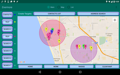
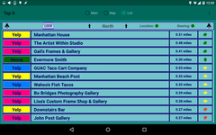

By: Barry Holroyd
Evermore is fundamentally a search app. However, it is far more expansive, flexible and intuitive than most search apps.
 
It uses a map-driven approach to present all results so that the location of each one, relative to some point of interest, is immediately apparent and it provides a list of integrated search results with arrows pointing to the physical location of each result. These features make it ideal for planning trips, either short or long.
Evermore is available in the Google Play Store.